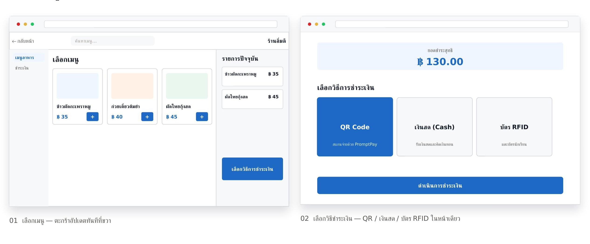
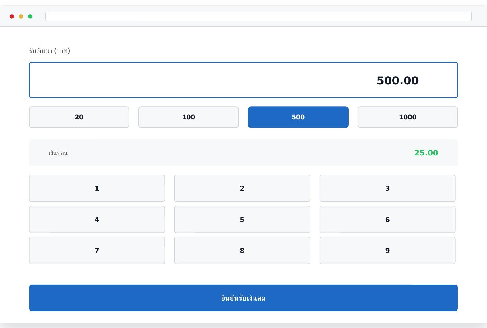
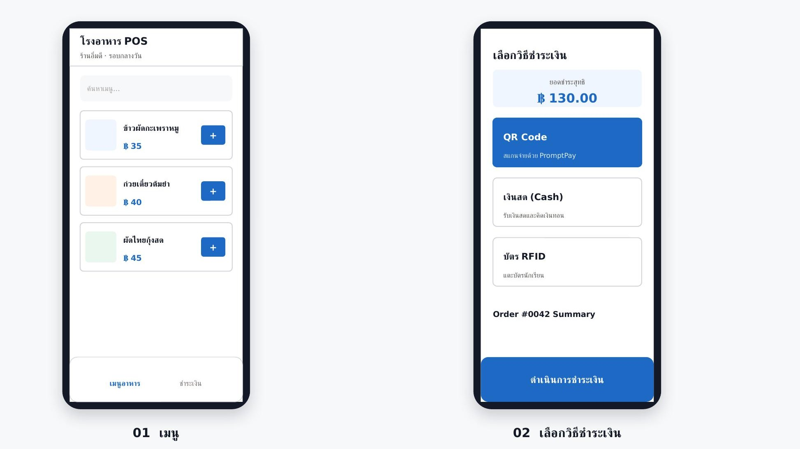

Canteen & Restaurant POS · UX/UI Case Study
One POS, Every Payment Method, Every Device
Redesigned a restaurant/canteen POS system — from a back-office tool that only worked on a computer, into one that runs on desktop and mobile alike, with QR, cash, and RFID card payments unified in a single screen.
This is real client work — the restaurant name, menu, colors, and sample data shown have all been fictionalized for portfolio presentation and are not the real business's actual data.
01 — Overview
From a desktop-only back office to a POS that works anywhere
The client's existing POS was built for a restaurant/canteen counter and designed to run only on a back-office computer. This project redesigned it to work on both desktop and mobile, and consolidated every payment method into one screen — replacing a system that used to split the menu by payment type.
02 — Persona
Two roles the system had to work for
Front-of-house Cashier
"Prae" · 28 years old
Goals
Charge quickly, get every baht right, and cut down long queues during rush hours.
Pain points
The old menu split screens by payment method — had to memorize several screens, and it only worked on the back-office computer.
Student / Paying Customer
"Pam" · 12 years old
Goals
Pay with whatever's most familiar (a student card) without needing to carry cash.
Pain points
Long waits when a payment counter only supports certain methods, and wants confidence that the charge is correct.
03 — Problem & Solution
From screens split by payment method, to one screen that does it all
Problem — Old System
Worked only on a computer, with a UI designed for back-office use — inconvenient for selling off-counter or during long queues. Each payment method (cash / QR / stored-value card) also lived in its own menu or screen, forcing the cashier to switch menus every time a customer chose a different way to pay.
Solution — New System
Redesigned to run on desktop and mobile from the same structure, with every payment method unified into a single screen — the cashier picks QR, cash, or RFID card without ever leaving the order-summary screen, cutting down steps and confusion at checkout.
04 — User Journey
The cashier's path, from picking items to handing off the order
01
Pick items
Search or pick from the menu grid, add to cart.
02
Review cart
See the order list and total in the right-hand panel.
03
Choose payment method
The old system's pain point — now just one tap.
04
Confirm payment
Scan, take cash, or tap card, matching the method chosen.
05
Hand off order
Close the sale, call the next order right away.
05 — Design Process
From surveying the counter to a system that actually works
01
Survey the existing setup
Analyzed the payment flow for each method and the constraints of using the counter's actual devices.
02
Design a unified payment flow
Brought every payment method into one screen, structured with the same logic across desktop and mobile.
03
Design the full UI
Built out the menu, cart, and every payment screen, with a design system made for the project.
06 — Main Screen / Desktop
Pick items, then choose how to pay — right away

The heart of this project
One screen handles every payment method
When the cashier picks "Cash," the system offers quick-amount buttons and a keypad that calculates change automatically, without ever leaving this screen — the same structure used for QR and RFID card, too. The cashier learns one flow, with no menu-switching by payment method like the old system.

07 — Main Screen / Mobile
Same logic, on a smaller screen

08 — Design System
Color, type, and the core components
Aa กข 123
Typography — Prompt. Used across every interface and content element, matching the real product's font.
09 — Intended Impact
Designed for faster, easier counter service
01
One flow, every device
Desktop and mobile share the same flow, so a new counter can open without needing a dedicated computer.
02
Every payment method, one screen
QR, cash, and RFID card live together on one screen — no more menu-switching by payment method.
03
Shorter queues at rush hour
A clearer structure helps cashiers move faster exactly when it matters most.
Interested in working together?
Open to UX/UI design work on systems that need to run across devices and contexts — feel free to reach out.